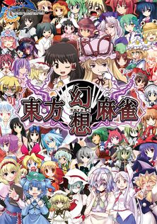

- Welcome to Touhou Wiki!
- Please register to edit. For assistance, check in with our Discord server or IRC channel.
Touhou Unreal Mahjong
| 東方幻想麻雀 Touhou Unreal Mahjong | |
|---|---|
|
 | |
| Developer | |
| Publisher | |
| Released |
March 08, 2009, August 15, 2009 (Revision 2) (Reitaisai 6) |
| Genre |
Riichi Mahjong Game |
| Gameplay |
Single-Player Story Mode, Free Play, Netplay |
| Platforms | |
| Requirements |
Pentium 2GHz, 1GB hard disk, DirectX 9, 512MB RAM, 32MB VRAM |
Touhou Unreal Mahjong (東方幻想麻雀 Touhou Gensou Māzyan, "Touhou Fantasy Mahjong") is a Mahjong fangame created by D.N.A.Softwares in March 2009 that involves the Touhou Project' characters, settings, and music released at Reitaisai 6. It, along with the related Magus in Mystic Geometries, are rare examples of ZUN's contributing to fan-made works.
A Revision 2 disc was released at Comiket 76, which adds new stages, characters, and new features such as a Sanma (3-player) option in free play and netplay modes, and also changes some old characters' special powers for balance.
Gameplay[edit]
- Main articles: Gameplay (includes a more detailed description of the game and information on scoring) and Strategy
Touhou Unreal Mahjong uses standard riichi Mahjong rules, with slight variations for each of the game's stages. In addition, each of the game's characters has a special ability outside of the standard rules of the game.
In the game's story mode the player faces three sets of three set opponents, with dialogue before each match. To continue you must place third or better in the first match, second or better in the second match, and first in the final match. Upon beating the third match, the next character's story mode will be unlocked for play. Additionally, those characters you faced in story mode will be unlocked for use in freeplay.
There's also a freeplay mode in which the player can choose any character to play. A player may use any number of duplicate characters. Additionally, there is a netplay option which requires a serial key to unlock.
An extra stage can be unlocked through story mode.
Story[edit]
Several days after the Hot Springs incident, Reimu was drinking tea at the
heated table in Hakurei Shrine, bemoaning the piles of snow that had gathered.
She wondered why there were an ice fairy and two cat youkai playing outside noisily
and coming in to nab teacakes when tea had been prepared, but she decided that
compared to the happenings in the underground, it wasn't anything to get fussy about.
Yukari: "You look like you're bored."
Reimu: "All sorts of bothersome things happen all year around. It's nice to take it
easy sometimes."
Reimu decided not to answer Yukari's frivolous talk seriously, and instead answered
by reaching for a teacake. Even as Reimu thought about how the winter might be more
pleasant than usual with a simmering hot spring available, an uncomfortable feeling
came over her once she saw Yukari's grinning face.
Reimu: You're not thinking of anything weird again, are you?"
Yukari: "Who knows? I'm not thinking about anything right now."
Reimu: "Right now...?"
Yukari: "Yes, right now. I might start something in the future, but not for now."
Yukari's advance notice gave Reimu a "not again..." expression on her face, but she thought that at least, it won't be as major as the blooming sakura ghost, underground spirits or blistering summer incidents.
Several days later, the Hakurei Shrine's archway disappeared.
Reimu: "...It can't be due to any light-bending tricks, can it."
Marisa: "No way. I flew over here, and flew right past where it normally would be, noticing then that it disappeared."
As poorly maintained as Hakurei Shrine was, it was still a shrine. That shrine without it's archway could have an influence on the barrier, but thankfully nothing seemed to have changed. As snow had piled up where the archway once stood, it was easily guessed that the disappearance occurred the night before. However, the questions of "who" and "how" remained unanswered.
Reimu: "Geez, I wonder what amazing youkai could've carried off something that big."
Marisa: "In the first place, how could they have done it? Maybe Suika made herself huge then knocked it over?"
Reimu: "If that was the case, then it would be lying somewhere. Not to mention the huge sound it would make, and she should be hanging around heaven right now anyway. And it doesn't seem like any other incidents are occurring besides this..."
Marisa: "Ahh, now that you mention incidents, weird things have been happening."
Reimu turned immediately to face Marisa upon hearing her words.
Marisa: "It's not anything big, but all the magic power floating around my house
disappeared in a flash. Since it disappeared so suddenly, I figured it just went to someone else's house. It was still weird so I came here to investigate, but I didn't think the entire archway would've disappeared too."
Reimu: "You're talking about it so happily, you're really okay with that...?"
Marisa: "Well, if you're talking about whether it's good or bad, ain't it good?
Magic power just floating around is kinda messy, don't ya think?"
???: "Then let's play with everyone using that magic power."
As the clear voice rang out, a sudden wave of magic power started to flow. The power felt familiar to Reimu, and a tiresome expression grew on her face, while Marisa screamed in surprise. The tempest of magic power flying everywhere eventually settled, and all that was left was a table and case under where the archway used to be.
And at roughly the same time, the Scarlet Devil Mansion, Hakugyokurou, Eientei, the Palace of Earth Spirits, etc... all had a table and case suddenly appear inside.
Reimu reluctantly began her investigation by visiting Rinnosuke at night, who had only one thing to say.
"In any case, why don't you use that mahjong table to play mahjong?"